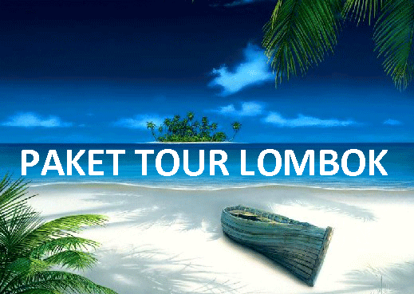

Lombok Tour
Wisata Lombok bersama Lombok Tour
Selamat datang di website resmi Lombok Tour, kami menyediakan paket wisata lombok premium untuk Anda yang ingin wisata nyaman dan menyenangkan di Lombok. Harga yang kami tawarkan untuk paket tour terbaik di Lombok termasuk hemat bila dibandingkan dengan pelayanan yang Anda terima. Paket tour yang kami tawarkan sudah termasuk hampir semua pengeluaran wisata di Lombok.
Kami sangat mengutamakan kenyamanan dan kebahagiaan tamu selama wisata, dari sebelum kedatangan hingga Anda wisata di Lombok, kami akan selalu memberikan pelayanan yang terbaik. Kami selalu mempersiapkan akomodasi dengan sangat maksimal sebelum digunakan, kami selalu mempersiapkan semua kebutuhan wisata Anda dengan sangat baik untuk kenyamanan wisata Anda di Lombok.
Objek wisata Lombok terbaik yang bisa Anda kunjungi
Pantai Kuta Lombok dan Tanjung Aan merupakan pantai yang indah dan memiliki pasir seperti merica. Selain berfoto dengan latar pantai yang indah dan menikmati pemandangan pantai, Anda juga bisa menikmati keindahan pantai ini dengan berenang.
Pantai Pink dan Tanjung Ringgit adalah dua objek wisata yang letaknya di Lombok Timur, kita akan menggunakan perahu untuk mengunjungi objek wisata ini, karena dengan menggunakan perahu banyak objek wisata yang dilihat seperti pulau pasir, yaitu pulau pasir cantik yang timbul bila air surut, juga kita akan melewati pantai pink 3, pantai pink 2 dan pantai Mangkok yang biasa dijadikan tempat snorkeling oleh wisatawan. Belum puas dengan wisata pantai? kita akan mengunjungi Tanjung Ringgit dengan pemandangan yang berlatar laut lepas yang indah, serta melihat dari dekat meriam peninggalan Jepang, dijamin seru!
Pantai Senggigi adalah salah satu pantai yang banyak dikunjungi di Lombok, tidak hanya wisatawan, penduduk Lombok sendiri sering berkunjung ke pantai Senggigi karena ombaknya yang tidak terlalu tinggi serta pasirnya berwarna putih dan lembut. Pastikan Anda ke pantai Senggigi bila ke Lombok.
Gili Nanggu ialah salah satu pulau kecil yang sangat indah, sering disebut gili private karena jarang dikunjungi oleh wisatawan. Gili Nanggu merupakan salah satu tempat snorkeling terbaik di Lombok, karena banyak ikan serta karang mengelilinya. Selain ke Gili Nanggu, di sini juga terdapat beberapa gili yang tidak kalah indahnya yaitu Gili Sudak, Gili Tangkong dan Gili Kedis.
Gili Trawangan merupakan Gili yang paling banyak dikunjungi oleh wisatawan, terutama wisatawan luar negeri. Tidak heran bila di Gili Trawangan banyak sekali terdapat hotel, restaurant hingga penyedia peralatan snorkeling dan diving. Banyak sekali yang bisa kita lakukan di sini, seperti snorkeling dan diving untuk melihat keindahan bawah lautnya, bersepeda atau menggunakan cidomo (sejenis andong) keliling Gili, tidak sedikit juga wisatawan hanya berjemur atau bermain di pantai bersama keluarga.
Untuk mengunjungi beberapa objek wisata lombok menarik yang kami sebutkan diatas tentu Anda butuh travel agent yang berpengalaman, profesional dan tentunya memberikan harga yang hemat. Kami Lombok Tour Plus adalah salah satu travel agent online terbaik di Lombok, sudah lebih dari 3 tahun kami melayani setiap wisatawan dengan profesional dan bersahabat, memberikan solusi wisata dan mengajak keliling objek wisata Lombok yang masih alami dan asri. Lombok Tour Plus juga sudah memiliki surat ijin usaha serta surat ijin pariwisata yang dikeluarkan oleh departemen wisata Lombok. Kami harap dengan pengalaman dan ijin pariwisata yang kami miliki, menjadikan Anda lebih nyaman wisata di Lombok bersama kami.